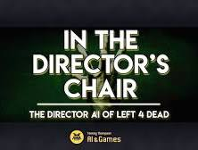
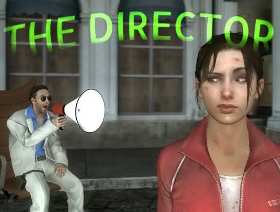
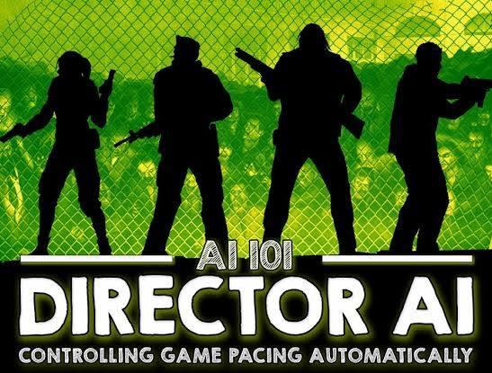
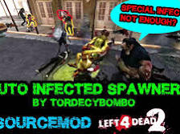

Left 4 Dead AI Director




How the AI Director Works
 YouTube·LEXZP +1
YouTube·LEXZP +1- Tracking "Survivor Intensity": The Director monitors every player's hidden stress level. This metric increases when you take damage, get incapacitated, or fight close-quarters zombies, and it slowly decays when things are quiet.
 Instagram +2
Instagram +2 - The Stress Cycle: The system loops through distinct phases based on player intensity to create emotional highs and lows:
- Build Up: It spawns zombies and special infected to ramp up the tension.
- Peak: The threat reaches maximum chaos (e.g., a massive horde attack).
- Relax: Once the peak ends and intensity is too high, the Director temporarily stops spawning aggressive waves to let players heal and breathe. YouTube·AI and Games +4
- Procedural Spawning: It dynamically populates the level out of the players' line of sight. If a team is thriving, it will spawn fewer health items and tougher obstacles, like a Tank. If the team is heavily wounded, it will hold back hordes and swap minor items out for health kits. Left 4 Dead Wiki +3
- Enforcing Teamwork: The Director actively tracks player spacing. If a "lone wolf" runs too far ahead or lags behind, it explicitly triggers Special Infected (like the Smoker or Hunter) to trap them, forcing the team to cooperate. YouTube·LEXZP
Left 4 Dead 2 Upgrades
- left4dead.fandom.com
https://left4dead.fandom.com/wiki/The_Director - www.youtube.com
https://www.youtube.com/watch?v=hsJbr4gIwe8&t=84 - www.instagram.com
https://www.instagram.com/reel/DehepkqD5PW/ - www.youtube.com
https://www.youtube.com/watch?v=WbHMxo11HcU&t=232 - left4dead.miraheze.org
https://left4dead.miraheze.org/wiki/The_Director
1. The Line of Sight Rules: How the Director "Cheats"
- The NavMesh and Visibility Clusters: The map is broken down into a grid of walkable polygons called a Navigation Mesh (NavMesh). Each area of the NavMesh belongs to a "potentially visible set" (PVS).
- Raycasting the FOV: The engine tracks a 120-degree cone originating from each player camera. If a section of the NavMesh falls inside any player's active cone and has a clear line of sight (no walls or solid props blocking it), that section is strictly flagged as "Visible."
 GitHub
GitHub - Spawning Out of View: The Director selects spawn areas that are topologically close to the survivors (using a breadth-first search on the map grid) but guarantees that the chosen polygon is "Not Visible". WARFRAME Wiki
2. The Evolution of Pacing and Visibility
| System | Primary Games | How It Handles Player Line of Sight & Map Geometry |
|---|---|---|
| AI Director 1.0 | Left 4 Dead | Calculates visibility on a static map. Spawns hordes and Special Infected in nearby dark corners, around bends, or behind closed doors just outside the players' FOV. |
| AI Director 2.0 | Left 4 Dead 2, The Anacrusis | Dynamic Map Mutators. It manipulates the map itself to block player line of sight—spawning new walls, altering routes, or dropping heavy fog/rain to shorten the players' visible raycast range, allowing enemies to spawn much closer. |
| The "Next-Gen" Directors | Back 4 Blood | Integrates environmental "Corruption Cards". It pairs line-of-sight spawning with systemic modifiers, like dynamic fog blackouts or armored modifications, completely altering how players scout ahead. |
3. Deliberate Exceptions to the Rule
- The Drop-In: The Director will spawn a horde on a roof or ledge directly above the players. Because the polygon is vertically outside the players' horizontal FOV, it's technically valid. The zombies then climb over the edge, raining down on the team.
- The Corner Ambush: The Director loves placing Special Infected (like a Witch or a Tank) around sharp corners where your forward trajectory will force a line-of-sight check the absolute millisecond you turn the bend.
- Turtle Rock Studios
https://www.turtlerockstudios.com/ - Stray Bombay
https://www.straybombay.com/ - Navigation Mesh (NavMesh)
https://developer.valvesoftware.com/wiki/Navigation_Meshes - github.com
https://github.com/JT5519/AI-Director - wiki.warframe.com
https://wiki.warframe.com/w/AI_Director
The System Core: "Shift" Pacing meets Commander Overview
- Volumetric Google Maps Integration: The entire theater is rendered in real-world 3D. A Commander views the city from a macro, top-down perspective, looking at live telemetry data.
- Possession Mechanic (The "Shift"): Instead of just giving orders, the Commander can instantly select any vehicle, drone, or infantry unit on the ground, "possessing" their first-person or cockpit view in VR.
- The Data Loop: Every action creates data logs. Replays can be played back dynamically via a
.demofile reader to analyze choke points, tactical errors, or speed records, feeding directly into a global Apex-style seasonal leaderboard.
Interactive Tactical Command Dashboard
.demo file replays, and monitor the competitive leaderboard metrics. .demo replays with volumetric map data, or should we map out the VR control layouts for a pilot possessing a drone versus a driver possessing a vehicle? 
Recorded diagram labels and controls: pause Active Link Signal Degradation Offline Node SF_BAY_TACTICAL_GRID V-01 (100%) V-02 V-03 V-04 V-05 GRID SYNC RATE 40.0% LINKED NODES 2 / 5 THREAT FACTOR 60.0% Commander Tactical Viewport Orbital Grid Map Telemetry Matrices Neural Overdrive Coupling Sync Gain x1.2 FOCUS POINT LINK: V-01 ACTIVE Callsign Unit Interceptor Prime Possession Lock 100% Quantum Possession Priority Leaderboard 01 speed Interceptor Prime SIG: 100% 100% 02 radar Falcon Recon Alpha SIG: 100% 100% 03 shield Enforcer Heavy 09 SIG: 10% 0% 04 radar Grid Sweeper Echo SIG: 10% 0% 05 dns Mobile Node Lambda SIG: 0% 0%
Cryptographic Identity Layer (SHA-256)
Tom Klootwijk NL200678942 10-07-1990) is immediately processed through a secure hashing function. This ensures that the user's real-world data remains completely private while acting as a verifiable, unique seed for the simulation: - Raw Identity Seed:
Tom Klootwijk NL200678942 10-07-1990 - Secure Unique Hash Value:
f5c046054c5fc37ec563c3e6d5eeecd47cda9058956d8151ef5cb94c954701c4
The Gameplay Architecture: Retro Tactics meets Modern RP Streams
- The Specialists (HL1 Mod) Combat Physics: The ground combat layer adopts the hyper-stylized movement of The Specialists. This means cinematic dive mechanics, slow-motion bullet time triggers, dual-weapon handling, and stunt-based close-quarters combat are mapped directly into the tactical units you can possess.
- GTA V Roleplay Economy & Persistent World: Instead of localized matches, the volumetric map functions as a living, persistent roleplaying city server. Ground units possess distinct jobs, legal statuses, inventories, and custom radio channels, creating natural dramatic narrative arcs optimized for live streaming platform deployment.
- The Real-Time VFX Anonymizer: Borrowing from volumetric point-cloud concepts, any player streaming their "Possession Mode" view can activate a privacy shader. This filters real-world geometry, faces, or restricted map areas into a glitched digital particle field. This process masks sensitive data in real time while maintaining a highly aesthetic cyberpunk presentation for the audience.
Enhanced Roleplay Commander Dashboard

Recorded diagram labels and controls: pause CYBER_COMMANDER_SYS_v4.81 [A-1] ANONYMOUS ACTIVE [B-3] ANONYMOUS HACKING [C-9] ANONYMOUS POSSESSED [D-2] ANONYMOUS ACTIVE POSSESSION LINK CONNECTED LIVE BITRATE 5480 kbps STREAM VIEWERS 1420 👀 SHA256 SECURE SHA256:// ANONYMIZED_LINK_ESTABLISHED // NODE_A9_ENCRYPTED // STATUS_STEALTH_VERIFIED // 7f83b1657ff1fc53b92c1812111a91e1492b451241a451fa12e1241a4141d8e1 // CORE_GRID_SYNC_COMPLETE // Anonymizer Overlay Stealth Mask Bypass Matrix Scan Range Radius 45 km NODE C-9 ANONYMOUS NODE Job: Overdrive Shift Integrity: 99% Hash: 7f83b1657ff1... dynamic_feed Trigger Overdrive Shift Select Stream Target Anchor A-1 - Anonymous Node (active) B-3 - Anonymous Node (hacking) C-9 - Anonymous Node (possessed) D-2 - Anonymous Node (active) C-9 - Anonymous Node expand_more